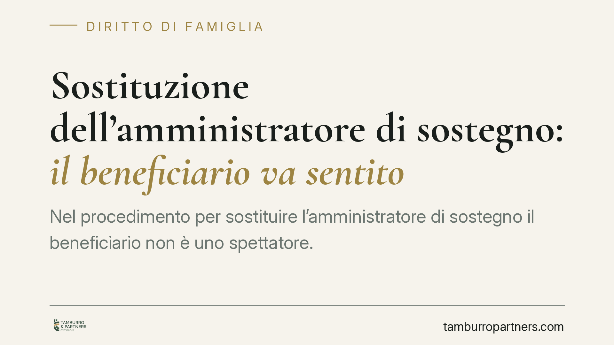

Sostituzione dell'amministratore di sostegno: il beneficiario va sentito
Nel procedimento per sostituire l'amministratore di sostegno il beneficiario non è uno spettatore. La giurisprudenza di legittimità torna a ribadire che l'omessa notifica e la mancata audizione della persona amministrata possono viziare il decreto del giudice tutelare. Un tema che tocca diritti fondamentali di chi si trova in condizione di fragilità e ha ricadute concrete sulla validità del provvedimento.

Il caso e la questione
La sostituzione dell'amministratore di sostegno è un passaggio frequente: l'incaricato rinuncia, viene revocato, entra in conflitto di interessi o non svolge più il compito in modo adeguato. In questi casi il giudice tutelare nomina un nuovo amministratore.
La domanda è semplice: il beneficiario — cioè la persona a favore della quale è stata aperta l'amministrazione di sostegno — deve essere coinvolto in questo procedimento? La risposta della giurisprudenza è affermativa. L'orientamento di legittimità valorizza l'autonoma legittimazione processuale del beneficiario, che resta titolare di diritti e capacità, salvo i limiti specifici indicati nel decreto di apertura.
> Nota redazionale: gli estremi esatti della pronuncia citata dalla fonte (numero, anno e sezione) sono in corso di verifica interna e vengono qui volutamente omessi. Su un contributo a firma dello studio non pubblichiamo riferimenti giurisprudenziali non confermati.
Inquadramento normativo
L'amministrazione di sostegno è disciplinata dagli artt. 404 e seguenti del codice civile. È bene distinguerla dall'interdizione: mentre quest'ultima priva la persona della capacità di agire in modo tendenzialmente pieno, l'amministrazione di sostegno è una misura flessibile e proporzionata, che conserva al beneficiario tutta la capacità non espressamente limitata dal giudice (art. 409 c.c.). Proprio da qui deriva la sua legittimazione ad agire e a essere ascoltato.
L'art. 407 c.c. prevede, in sede di apertura, che il giudice tutelare senta personalmente la persona cui il procedimento si riferisce e tenga conto dei suoi bisogni e delle sue richieste. Questa norma riguarda in senso stretto l'apertura della misura. La giurisprudenza, però, ricava dal complessivo impianto degli artt. 404 ss. c.c. e dai principi costituzionali sulla dignità della persona un dovere di partecipazione del beneficiario anche nelle fasi successive che incidono sulla sua sfera, tra cui la sostituzione dell'amministratore. La ratio è coerente: se la persona va ascoltata quando si sceglie chi la assiste, non può esserne esclusa quando quella figura viene sostituita.
Di conseguenza, l'omessa notificazione dell'istanza e la mancata audizione possono tradursi in un vizio del procedimento, con riflessi sulla validità del decreto.
Implicazioni pratiche
Per il beneficiario e per i suoi familiari il punto è concreto: un decreto di sostituzione adottato senza aver messo la persona amministrata nelle condizioni di partecipare e di esprimersi è esposto a impugnazione.
Lo strumento è il reclamo previsto dall'art. 720-bis c.p.c., che rinvia all'art. 739 c.p.c.: i decreti del giudice tutelare in materia di amministrazione di sostegno si impugnano con reclamo alla corte d'appello, nel termine di dieci giorni dalla comunicazione o notificazione del provvedimento. Si tratta di un termine breve e perentorio: la tempestività è decisiva.
Per chi assume o mantiene l'incarico di amministratore, la lezione è speculare: la regolarità del procedimento, compresa la partecipazione del beneficiario, è parte integrante della legittimità della propria nomina.
Cosa fare in concreto
- Verificare la notifica. Controllare che l'istanza di sostituzione e la data dell'eventuale udienza siano state comunicate al beneficiario.
- Chiedere l'audizione. Sollecitare formalmente al giudice tutelare l'audizione personale della persona amministrata, salvo impedimenti oggettivi da documentare.
- Presidiare i termini. Annotare la data di comunicazione del decreto e calcolare subito i dieci giorni per il reclamo ex art. 720-bis c.p.c.
- Conservare la documentazione. Raccogliere copia del decreto di apertura, dei verbali e delle comunicazioni: servono a ricostruire la regolarità del procedimento.
- Valutare l'impugnazione con un legale. Se emergono vizi partecipativi, esaminare l'opportunità del reclamo alla corte d'appello prima della scadenza del termine.
In generale, la partecipazione del beneficiario non è un adempimento formale ma un presidio di garanzia: trascurarla espone il provvedimento a instabilità.
---
Contributo informativo a cura di Tamburro & Partners - Avv. Giuseppe Tamburro. Non costituisce parere legale.
Ogni famiglia ha il suo equilibrio.
Separazione, divorzio, affidamento, assegno: se vuoi un confronto riservato su una specifica situazione, scrivi allo studio. Ti rispondiamo entro un giorno lavorativo.